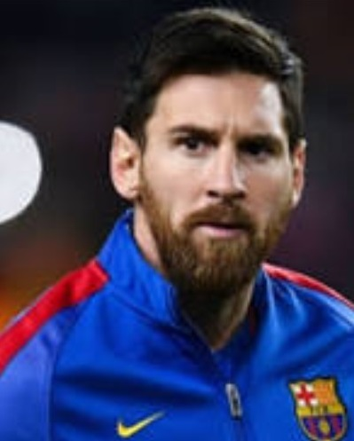

My favorite sports team has always been FC Barcelona. FC Barcelona is a professional soccer team notorious for having all the best players. Barcelona is my favorite team because of their three key players, Lionel Messi, Luis Suarez, and Neymar JR. Not only are the my favorite players to watch but they are good role models. They all have spent a tremendous amount of time and money to support charities across the globe. FC Barcelona is my favorite soccer team because of the respect each player carries with them.
Lionel Messi
Lionel Messi is undoubtedly one of the best players to ever step foot on a soccer pitch. Messi has played with FC Barcelona his whole career and has broken countless records include most goals ever scored. He has recently turned 30 and is expected to play for another 6-10 years.
Ronaldinho Moreira
Considered one of the best to ever step on the field, Ronaldinho Moreira is another star Brazilian athlete who is known as a legend in the sport of soccer. The 36-year-old is one of the few players to have both Champions League and Copa Libertadores winners medals, and he also lifted the World Cup with Brazil back in 2002.
Dani Alves
Dani Alves is another barcelona legend. The Brazilian is considered the best right back in Barça’s long history. He arrived in 2008 from fellow La Liga club Sevilla, already with a reputation as one of the best defenders in the country. One of his most well known attribute on the field is being able to score goals in particular from outside the area or long-range set-pieces.